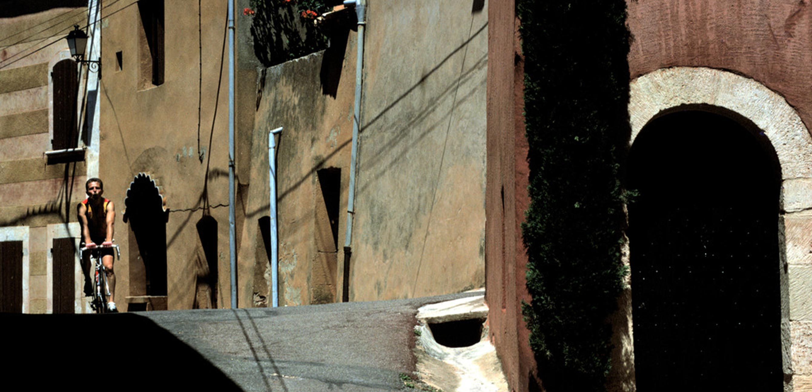
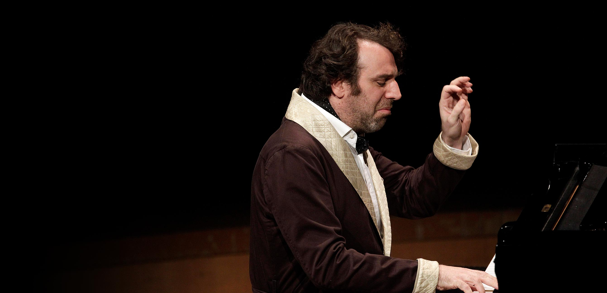
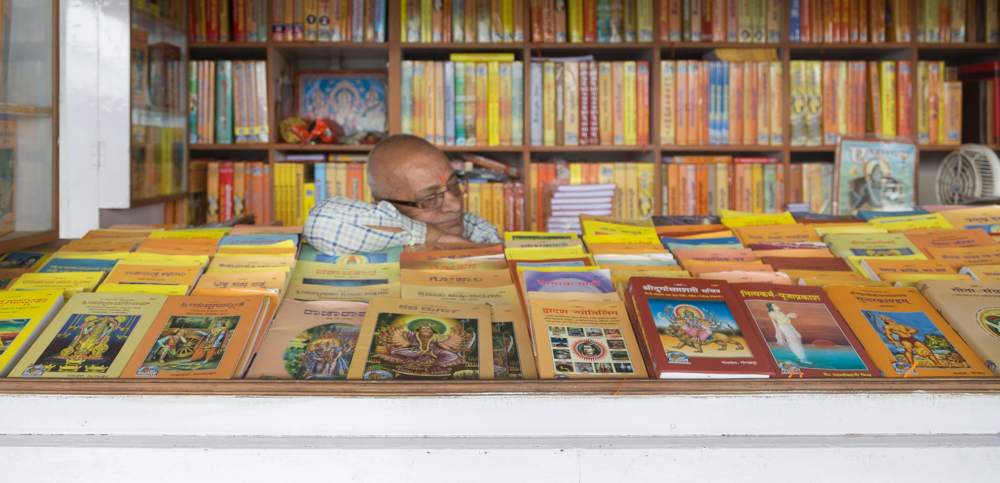

The Fabulist
A literary gesture born of the enjoyment and intellectual nourishment Aesop derives daily through the written word, The Fabulist features fiction and non-fiction works. In honouring the ancient Greek slave and fabulist whose name our products bear we present fables alongside four other rubrics:
The Latest News
Aesop News
-
By Ottessa Moshfegh ● February 2020
Fable
Nanjing
I’d slept with a bartender in Beijing—a tall Chinese man who had seemed shocked when I followed him back to his room in the building behind the bar. We barely spoke.

The TV at the hotel in Nanjing was surprisingly state of the art, a flatscreen fixed to the wall below a framed factory watercolor landscape. The room itself had an air of ruined fancy: peeling scrollwork, ripped cane chairs, faded satin drapes. There were no walls around the bathroom, so the toilet sat next to the queen-size bed, the bathtub the dresser, and so on. My boyfriend and I were in Nanjing for no reason other than to get away from Beijing. We had agreed to break up after I miscarried, but it took longer than we thought to separate. I’d slept with a bartender in Beijing—a tall Chinese man who had seemed shocked when I followed him back to his room in the building behind the bar. We barely spoke. His teeth were small and cute and his face was hoisted up by dimples set deep on the outer edges of his eyes. In the morning, men in black suits rode through the mist on bicycles like ghosts summoning something terrible or wonderful, I couldn’t tell. I did not go home to my boyfriend. I got a bed in a hostel around the corner from our apartment. I slept all afternoon in Nanjing. My boyfriend shook me awake in the evening. I watched him pace the room and talk about the museum he’d been to. He went and flushed the toilet. He went and opened a window. He wouldn’t sit down. He complained that I’d left bits of potato chip sprinkled over the bedspread. They stuck to my bare leg as I swiveled around, trying to grab his shirttails. “Let me hold you,” I said. “I’m going downstairs to check my email,” he said. At that hostel in Beijing there’d been a Canadian girl who couldn’t stop eating. She came up behind me one evening while I was getting dressed. “I’m fat,” she said. “I can’t stop eating.” I told her, “I’d eat all the time, too, but I smoke instead.” She followed me around for the last few days she was there, studying me. She took me to the tourist market where everybody buys silk scarves and cheap porcelain cups and teapots. Someone stole her wallet. I took her to a Tibetan restaurant overlooking the American Embassy. In the bathroom, I showed her how to make herself vomit. “Just suck in, then do like you’re burping,” I told her. “Don’t use your fingers. They just get in the way.” “And I can do this after every meal?” “You can do whatever you want,” I told her. After that, we walked arm in arm down the stark boulevards, hungry, smoking. She talked about a boyfriend in medical school. Nothing else happened. We were just friends. She had my favorite kind of freckles: widespread and regular, visible only when one got up too close. “I want to sing that Chinese song about the girl with no hands, probably six or seven times,” I told the manager at the karaoke bar. This was Nanjing. I had a bottle of vodka and a liter of lemon Pepsi on the table. It was a bigger place than most—high ceilings and a disco ball, an actual stage with a microphone stand. A shy, middle-aged woman was quietly singing “Hotel California.” I barely got through one rendition of the song I’d requested. The Chinese was too hard for me. “Sorry,” I said to the crowd, and quit. They clapped anyway. Next, a middle-aged man sang “Jungle Fever” in a lovely falsetto, standing perfectly still just outside the perimeter of the spotlight. Afterward he walked off the stage, unbuttoned his jacket, and laid it carefully over the back of the chair beside me. I looked at his face. Deep-pitted acne scars, long flat hair falling to either side, thin wire-rimmed glasses. He told me he was too shy to dance but that he would like to practice his English, and asked if he could buy me dinner at some fancy club across town. “Let’s just go down the road and eat like normal people,” I said. He agreed. Later on, in a cab back to the hotel, I watched two people kneeling in the road. “Don’t worry,” said the driver, “it’s not real money they’re burning.” There was a small fire in front of them. They weren’t crying or frowning or doing anything with their faces. They looked perfectly normal. Actually, their faces looked expressionless, empty. They looked like nothing was ever or could be wrong, that nothing could ever move them. Back at the hotel, I shook my boyfriend awake. “Come outside,” I said. To my surprise, he followed me. We went out into the alley. I used my foot to clear the pavement of trash and dead leaves. I pulled out my wallet and my lighter and got down on my knees. I tried to light a five-kuai note on fire, but it wouldn’t catch. The next day, my boyfriend left. I took myself out for hot pot and got lost on the walk back to the hotel. I stayed in Nanjing two more days and saw the “Jungle Fever” man again. That time we went to the fancy club. We split a whole fish. I drank. Then I called my mom for her birthday. Then I took a train to Wuhan. Then a train to Changsha. Then I took a train to Guangzhou and a bus to Hong Kong. I had a silk dress made for me on the nineteenth floor of a concrete apartment building. The seamster pricked me with his needle a few times. “The color is good on you,” he said. This was 2003. Back when people knew the value of a few kind words. Ottessa Moshfegh is the author of four books, most recently the novel My Year of Rest and Relaxation, which was a New York Times bestseller. Her next novel, Death in Her Hands, will be published in April. She lives in southern California. Photograph by W.M. Harvey.
-
By Scott Sayare ● February 20200
Essential
La course en tête
I fled in all sorts of ways, into all sorts of diversions and projects, but the one that came to occupy nearly all my energy, and which proved for a time to be the most effective palliative, was pedaling a bike.

When I was twenty and very young, I spent a year in the French Prealps, in a minor city called Grenoble. I arrived alongside several other American students on a bright afternoon in August, on a bus from Lyon. I remember squinting out the window at the wide yellow plain baking in the sun until the plain abruptly ended, without any sort of forewarning in the landscape, and a fantastic wall of dark stone and forest rose where it had been. I have always been enchanted by mountains, which seem to me to radiate a sense of promise. I pressed against the window and looked up at the ridgeline that now filled the sky, imagining what vastness might be awaiting me on its far side, once I got up and over. The other students chatted or slept, and I felt intrepid, just as I’d wanted. Ostensibly I went to Grenoble to study. I took a full course load at the university, and yet I don’t recall giving any particular thought to my classes. I could not articulate it at the time, and it took me several years to see it afterward, but what I’d gone to France to do was flee. I had arrived at the moment, after a rather long and unreflective adolescence, when it occurred to me that I might be a less impressive young man than I’d assumed, and that my ambitions might in fact be fantasies. These ambitions were intense and consuming but also completely unspecific. In a word—please forgive me—I wanted to be great. Or, rather, I wanted the distinction that trails the great; I didn’t think much about the particulars of how I would earn it. I was bright enough, and I made up for what I lacked in depth or creative talent with a terrifying Stakhanovism, but I was also quite obviously a child, and I supposed that the world, in its magical beneficence, would arrange to spare me a fate in the unremarkable middle. When I finally understood that this might be a naïve and rather rosy view of how things worked, I found the implications far too awful to confront. I fled in all sorts of ways, into all sorts of diversions and projects, but the one that came to occupy nearly all my energy, and which proved for a time to be the most effective palliative, was pedaling a bike. In the United States, I was attending a prestigious school that I’d worked extremely hard to reach. Almost as soon as I arrived among the other academic strivers, however, I decided that what I really wanted was to be an athlete, and I started racing bikes. What I liked most about it was the lonely training, and the heroism of the longest rides in particular. It did not escape my notice that these were impressive to the people I told about them, and they were impressive to me as well. My body seemed to contain no small amount of possibility, and I discovered this with both pleasure and relief. I also found it marvelous to reimagine myself over the great distances I’d covered, up the mountains I’d climbed and across the spaces through which I’d passed in the accomplishment of my crystalline will. The rides were monuments to my preferred notion of myself. They also had the effect of depleting me. Returning home from four or five hours of pedaling, I would fall into bed exhausted and blank. It was childish, and on some level I knew it, but it was also a kind of ecstasy. When we arrived in Grenoble, we were taken to some tiny old apartments in the city center, around the corner from a tenth-century cathedral. I imagine some of the others went to have a look at the church. I did not. Rather, in the dusky courtyard of the apartment building, I immediately set about unpacking my wheels and frame and handlebars, along with the tools and rags I’d brought from home. For weeks, I had been studying a cycling blog that provided turn-by-turn directions for rides around the city, along with photographs from waypoints along the routes, and these made it possible for me to imagine myself into my first hours in France with intense specificity. For my first afternoon, I planned to ride up to the Col de Clémencières, a mountain pass just outside the city; if I was feeling good, I would continue up higher. But at some point in the early evening, while I was still busy rebuilding my bike, the young man with whom I would be rooming that night arrived. I will call him Jim. I suspect I would have resented anyone’s presence just then, but I disliked Jim with particular force. He looked to me like a frat boy who’d fallen asleep drunk in the sun, with spiky hair and tiny black eyes in a puffy face, and he wanted immediately to commune about the marvelous romance of French life. He suggested we have dinner together that night, and I could see no way around it. I would still have time for the first col, though. It was a warm evening, with the sun lingering just above the peaks outside the city. I don’t recall exactly, but I must have ridden out over one of the stone bridges in the city center and along the stuccoed esplanade, and then followed signs to the right for Saint-Martin-le-Vinoux, the village at the foot of the mountains where the road to the col began and a name I had memorized for the occasion. The climb up to the col was a bit more than three and a half miles along a wooded hillside. I was very fit, and it didn’t take me any more than seventeen or eighteen minutes to reach the top, but the feeling of those minutes has remained with me since. I was climbing in the shadow of a high line of ragged cliffs and the temperature dipped as I went up. The air met the warmth of the day rising up from the pavement to create that vivifying tension that anyone who has spent time in the mountains will recognize, that mingling of hot and cool that snaps you into a moment of experience. I had imagined myself here on this road, precisely here, in this dreamscape; and here I was. I have never had a more exultant experience on a bike. The world seemed to be opening itself to confirm that, in the end, I would be moving into it as I had hoped. The hills continued up into the distance, punctuated here and there by craggy peaks rising out of the forest, and I looked out on them and felt that already they had begun, in secret, to belong to me. Jim and I went for dinner at a cheap café on the plaza across from the church. He ordered confit de canard and a glass of Côtes du Rhône and sat back in his chair looking out contentedly at the scene. This was evidently a moment he’d anticipated. I think I remember him sipping the wine when it came and saying something I found abominable, like, “Ah, yes, that’s it!” When we’d finished, he invited me to have a look around the city with him, but I escaped back to the room, where I intended to be asleep by the time he returned. * Grenoble sits at the crux of a Y formed by two broad valleys, with high mountains filling the sky in every direction. To the south and west is the Vercors Plateau, a long wall of dark stone that hangs above the city and was famous during the Second World War as a redoubt of the French Resistance. To the east is a range known as Belledonne, which rises first as a row of gentle mounds but culminates high above in serrated black peaks; behind these are the summits of the Alps. And to the north of the city, bounded on either side by its two valleys, is the Chartreuse Massif. The Chartreuse is the lowest of the three ranges, and the smallest in extent. If it is famous for anything at all, it is for lending its name to the neon liqueur that the local monks bottle. It is where I spent most of my time. I am tempted to call the Chartreuse the most literal mountains I have ever seen. What I mean is that they are staggering, on the one hand, and immediately graspable by the imagination, on the other—the Platonic ideal of a mountain range. They are young, and correspondingly dramatic. From the valley floor they shoot up about six thousand feet, the first several thousand of which are sheer limestone cliffs. Above these is a mile-wide band of grazing meadows and farm villages, and then another thousand feet of cliffs ending in a square ridgeline. The French call the suspended meadowland a balcon—a balcony—and that is precisely what it resembles. The word suggests the human scale of the Chartreuse; its features are stark and intelligible, rather like those of a house, or of a body. The mountains seem almost to have been imagined by man, and imagined in his image. The cols of the Chartreuse resemble what the French word suggests, which is to say the graceful curve of a neck, as if the ridgeline were the angular head and shoulders of someone laid on his side, and the col the dip between them. To me, the Chartreuse was a playground that resembled a kingdom. It was imposing and grand, and yet small enough that I could feel I’d made it my own. Its cols—the Granier, the Cucheron, the Porte—were arduous enough, but they had the added advantage of being a bit obscure, and I felt that their obscurity made me distinctive. The famous climbs in the High Alps were all crowded with tourists. The Chartreuse was empty except for locals and connoisseurs, and therefore uncrowded by stories of excellence about people other than me. Mountains tend to excite the proprietary impulse in the people who love them, and cycling in the mountains is very much a collector’s sport. One of my private pleasures in Grenoble was to look up at the mountains and remind myself that I had been up and over them and back, to tick off the cols I’d climbed and feel that they were mine. My ownership was tenuous, of course, and I was constantly anxious about renewing it; it was possession of an extremely effortful kind, requiring that I prove again and again that I was fit enough and willful enough to deserve it. But so long as I went back up, the mountains would reflect back to me the grand idea of myself for which I was desperate. My accomplishments on a bicycle were more than abstractions or mere memories; they existed as physical presences in the world. The mountains themselves were the record of what I had done, and in Grenoble the record was everywhere. * A few days after our arrival, the other Americans and I were moved to a dormitory on the university campus, in an area of big-box stores on the city’s outskirts. The other residents were a mix of locals and students from elsewhere in Europe, and I made friends with a number of them. From the start it was important to me, predictably, that the Europeans not lump me in with the other Americans. Jim lived just down the hall. On weekend nights, he and the others would take the tram into the city center to go out to clubs. About an hour before leaving, Jim would turn the music up loud in his room and start drinking with whomever he could pull in. Sometimes a few of the Europeans drank with him, which aggravated me, but mostly it was him and the Americans. The rest of us would make dinner together in the spare kitchen area and roll our eyes until they left and the music and the whooping stopped. The moments just afterward were among my favorites in Grenoble, when everything was briefly quiet and I was the only American left. At the start of the year, Jim would make it a point to invite me out with him. I always declined, and my disdain must have eventually grown apparent, and we settled into a silent standoff for the rest of his time in Grenoble. He left France midway through the year; I stayed behind. At first I felt triumphant, as if his departure proved my singularity, and yet very soon I was at loose ends. He’d been a foil but also an audience, and I think what I truly wanted from him was that he tell me, himself, that I was destined for something better than he was. This was a cruel sort of fantasy, but what I find most appalling about it now is how utterly nonsensical it was. I still went out on my bike, hoping that someone might watch my flight and mistake it for greatness. Grenoble was the smallest year of my life. Scott Sayare is a journalist. He lived for a decade in Paris, but now resides in New York. Roussillon, France, 1980. Photograph by Dennis Stock/Magnum Photos.
-
By Salvatore Scibona ● February 2020
Shelf Life
The Halldór Laxness Library
At eighty, he has heard doomy predictions about the future of reading, especially reading printed books, for decades.
Imagination turns the faculties of perception toward an inner world at least as expansive as the one outside, and extends their range to objects more distant than they outwardly can reach. Because objects of imagination are untestable by external evidence, we perhaps fairly consider them less than real. “It’s all in your head,” we say of a delusion. Of course, we haven’t always taken indwellingness as proof of unreality or unimportance. But the value we ascribe to the things we fashion inwardly has been in decline.* [FOOTNOTE: *For a discussion of the role that science—or “parascience”—has played in the decline, see Marilynne Robinson’s Absence of Mind: The Dispelling of Inwardness from the Modern Myth of the Self (2010).] By “objects of imagination” I don’t mean abstractions or opinions but the conjured face in a dream, the music we summon in thought while seated in a quiet room, and particularly the invented world in which the action of a novel takes place. If this value were not in decline we would not pursue ever more opportunities to crowd our inward space with new technologies that fill consciousness while oddly starving it, and literary reading would still make the same claim on our free time as it once did. But as periodic reports from the National Endowment for the Arts have found, “literary reading in America is not only declining among all groups, but the rate of decline has accelerated, especially among the young.” So concluded the 2002 edition of the NEA’s survey. By 2017, the trend, at least among adults, had gotten worse: “The share of those reading novels or short stories is now lower than in any prior survey period.” Why is this happening? Recently, I ate lunch with Robert Darnton, historian of the French Enlightenment, trustee of the New York Public Library, and emeritus director of the Harvard University Library. At eighty, he has heard doomy predictions about the future of reading, especially reading printed books, for decades. Far from lamenting the prospects of the printed book in an ever-more-digital future, Darnton told me he believes the book is here to stay. I was not so bullish. Twenty years ago, riding the R train to work in Manhattan, I once looked up from the book I was reading and counted at least eight languages on the covers of the books of the other commuters. Today nearly all those people, including me, are looking at their phones. Despite my best efforts, I couldn’t persuade Darnton to mope with me about the fate of paper books. And some of the people on the train, he pointed out, are surely reading e-books; some are listening to audiobooks. He ate his salad, smiling. He is a hopeful man, a both-and thinker, and sees no reason the new technologies should displace the old ones if we choose to keep them. What we did agree on lamenting, however, was the lack of a certain charged something in contemporary engagement with literature. In university seminars, criticism, and conversation, I rarely hear people describe an encounter with a book that made them feel, as Emily Dickinson wrote, “physically as if the top of my head were taken off.” Darnton and I seemed to think we were talking about the same phenomenon, although the word for it eluded me. Then he told me the French would say of a merely good-enough book, which failed to shake your innermost self, that it lacked souffle—that is, breath. If we are lucky in life we find a few writers who speak to us this way, even from beyond the grave, even through translation, whose breath moves in us and makes us feel we had not quite been living before. An Icelandic novelist, beloved for decades around the world but still largely unknown in America, has done this for me. His name was Halldór Laxness. Laxness possessed an uncanny ability to weave his characters’ transcendent intuitions into their physical surroundings. Inner and outer life for him feel composed of the same fabric, as when he describes a child’s soul “rising out of his body like frothing milk brimming over the edge of a basin.” Here is Laxness at the beginning of World Light (1937–1940), a bildungsroman about a boy, Ólafur, who would become a famous poet in nineteenth-century Iceland: He was a foster child, and therefore the life in his heart was a separate life, a different blood, without relationship to the others. He was not part of anything, he was on the outside, and there was often an emptiness around him. And long ago he had begun to yearn for some indefinable solace. This narrow bay with its blue shells and the waves gently rippling in over the sand, with the cliffs on one side and a green headland on the other—this was his friend. It was called Ljósavík. The boy will go on to name himself, pretentiously but affectingly, after the bay, as if he had married it. Laxness is a writer of deep longings—and sudden jokes. (“[Ólafur] hated people, and wrote about them.”) Susan Sontag called his Under the Glacier (1968) one of the funniest books ever written. Perhaps because he almost always sets his novels in Iceland, amid a peculiar culture in a singular environment, and because he is so confident in his depiction of the physical particulars of the place, the novels also possess an equal and opposite confidence in their ability to speak to a quality rarely held up these days as a literary value: universality. To read Laxness is to encounter someone who has just this moment been knocked off his horse on the way to Damascus and feels he has no choice but to tell you what has happened to him. Ólafur feels “the deity reveal itself in Nature in an inexpressible music.” The physical hardships and humiliations the characters endure go right to the core of their being. On the farm in World Light where the boy is put to work to earn his keep, there is no paper “and even when there was, no one was allowed to waste it. He would furtively scratch letters with a stick on bare patches of earth or in the snow, but he was forbidden to do that and was told he was writing himself to the devil. So he had to write on his soul.” How to express the loneliness of rereading a book like this, briefly convinced that I, too, had a soul—since what else in me was this book speaking to?—and then to walk to the subway and ride into Midtown among the throng of commuters, staring like everyone else at my little screen, wolfing down impeachment news? For lunch I sometimes take friends to the Scandinavia House, on Park Avenue at 38th Street, a six-story cultural center enveloped in zinc and spruce. The bright café at street level is dominated by a tree in the middle of the floor, painted white and branching out over the diners like a friendly ghost. I started going there for the meatballs and because it’s just a five-minute walk from the office. Recently, however, I discovered that the building houses on the fourth floor an institution called the Halldór Laxness Library. I asked at the front desk if I could go see it. “Why?” I was asked. Because, I said, I love the novels of Halldór Laxness. No, I could not, I was told. It was for members only. Nevertheless, after a few phone calls and a bit more explanation, I was welcomed and given a friendly tour of the building, which houses all things Nordic, even a Scandinavian-style day care. The object of my inquiry was, it turned out, a glassy chamber with a big table and a collection of art books, a conference room more than a library—nothing about Laxness to be seen, alas, not even his picture. Later, a longtime employee explained that twenty years before, when the building was under construction, the Icelanders who got together to make a donation in support of it did not quite have the resources of the Volvo Group, for which a reception hall there is named, and asked if they could just name a room, call it a library, in honor of their national writer. I have been to Laxness’s house outside Reykjavík. It’s now a state museum. The clock in the foyer is the one that belonged to his grandparents and shows up in his novel The Fish Can Sing (1957), where its tocking seems to the young protagonist to be a voice saying “e-TER-nit-Y.” In season, the state keeps his pool filled, and his Rolls-Royce, bought with money from his Nobel Prize, sits in the driveway. The clock, the pool, the Rolls, his piano, his rack of neckties, and the valley the house overlooks are all very charming, but whatever I was looking for isn’t there. It’s no fault of the library or the museum that by honoring a writer, they attract people for whom his work is such an intense experience of imagination that they seek evidence that the experience was more than imaginary. Why should that clock need to exist anywhere but in the book and in my mind? Why do I go to these places, hoping somehow to smell a man who wrote in a language I don’t know and who died, in 1998, before I had ever heard his name? Because he comes to me in my dreams. And the world he has built in my mind feels saturated with life-giving breath. With reality. The regret has been around a long time that previous generations were better at reading, that literature mattered more to them, that works of imagination have lost their prestige. Maybe no present can compete with the imagined past in this way. But if we really are experiencing a slow-motion collapse in the value we place on literary reading, perhaps the crisis has come about because we no longer consider our imagination a worthwhile place to live. Or we don’t feel there is any air to breathe there, and refuse for whatever reason to entertain the possibility that the beautiful worlds that live only in our minds—albeit merely imaginary and merely our own—are, nevertheless, real. Salvatore Scibona’s most recent novel, The Volunteer, has been published or is forthcoming in seven languages. His first novel, The End, was a finalist for the National Book Award and the winner of the Young Lions Fiction Award. He has won a Guggenheim Fellowship, a Pushcart Prize, an O. Henry Award, and a Whiting Award, and been named one of The New Yorker’s “20 under 40” fiction writers. He directs the Cullman Center for Scholars and Writers at the New York Public Library. Photograph by Sabine Mirlesse, from As if it should have been a quarry (2011–13).
-
By César Aira ● February 2020
On Beauty
Twenty-four Issues of Artforum
On Saturday Ernesto told me that a used bookstore on Avenida de Mayo was selling off part of Ruth Benzacar’s library: catalogues, art books, magazines, above all, magazines.

On Saturday Ernesto told me that a used bookstore on Avenida de Mayo was selling off part of Ruth Benzacar’s library: catalogues, art books, magazines, above all, magazines. “A lot of them are old issues of Artforum ...” “Really?” I looked at my watch. It was five in the afternoon. “Can we go now?” He thought for a moment. He knows the hours of all the bookstores in Buenos Aires. “No, it’s closed. It’s open Monday through Friday.” “I’ll go on Monday.” “Good. Don’t wait. I don’t think they’ll last long.” “When did you see them?” “On Thursday.” I felt a twinge of irritation. If he had called me immediately, I could have gone on Thursday, or on Friday. Now we’d lost two days, and who knew if everything had been laid to waste. But I didn’t utter a word of reproach. I didn’t want to be unfair with Ernesto, to whom I owe so many of my joys as a reader. There had to be an explanation for his lack of urgency, for example, that he didn’t think buyers would rush there, or maybe that he didn’t fully appreciate the extent of my fanaticism. I didn’t give it any further thought, out of disgust for that kind of paranoid psychologizing of behavior, but now that I’m writing this I have to admit that these are not satisfactory explanations. Ernesto knows very well, and better than anybody, that you cannot count on a rare find, no matter how rare it is, staying on the shelves of a bookstore for a day, or even an hour. Just a few weeks earlier this had been confirmed for us. He had seen a complete edition (eleven volumes) of Pepys’s diary, he told me, we went together the next day and it had been sold! How many readers are there in Buenos Aires who are interested in that monumental work? And of them, how many have the money to buy it, on the spur of the moment, during our period of crisis? And of those, how many would find out that it had shown up in a little-known bookstore on Avenida Sarmiento? Nevertheless, there was the result: it was gone. Considering that Artforum has more of an audience than Pepys’s diaries, and that those issues would be sold at a derisory price, and that they were at a much more visible and popular bookstore, there was very good cause for alarm. As for the other argument, i.e., that he hadn’t taken the full measure of my interest in Artforum, this was a good reason for perplexed outrage. Did he not know me at all? He was my confidant, the only person I hid nothing from! Or at least that’s what I thought. Because one thing is the sincere intention to tell someone everything, and another the efficacy with which one makes oneself understood. In that respect it could have been my fault. Because of qualms about elegance, I might have given the impression that my interest in this or that, and in Artforum, stood merely on the threshold of passion, as if passion were something vulgar, far below the likes of us. Had I deceived him so effectively? Or, better said, had he allowed himself to be so thoroughly deceived? Because I’d learned that kind of elegance from him, and I made him my confidant because I knew that his dandyism would prevent him from taking me too seriously ... In any case, I think the blame was shared, mirrored. Once we established that there was nothing to do for now, and that I would go on Monday to the Avenida de Mayo, I asked him, more relaxed now, how he had found out that the library had belonged to Ruth Benzacar. He said from a few dedications. A renowned gallery owner (we both knew her, though superficially), Ruth had died, still young, a few months before. She must have left a good art library, which would remain in the hands of her heirs. For some reason, probably because of lack of space, they got rid of magazines and catalogues. The issues of Artforum were from the Eighties. I made a firm decision to go on Monday morning. But on Sunday Juan Pablo called me, and we made a date to meet at Café Tortoni on Monday at four in the afternoon, and since this bookstore was a mere hundred meters from Tortoni (and about half an hour from my house), it wasn’t worth it to make two trips. Or was it? I reasoned in the following way. In the morning and early afternoon some, or many, of the issues of Artforum could be sold. But I wouldn’t know about them. I would be satisfied with the ones I found in the afternoon, and I wouldn’t even need to blame myself because the others might have been sold on Friday. Whatever the case, I lived those two days in a state of delicious anticipation. On Monday at three in the afternoon I entered the bookstore. I went directly to the Artforums, which were on a cart close to the door. There were a lot: half a meter of magazines stacked vertically, which I began to look at one by one. “I have this, I don’t have this, I have this, I don’t have this ...” I recognized the issues I had with one glance at the cover. I didn’t care about the dates. For me, Artforum is always new. I lost count of the issues I didn’t have. Decades of searching for them with great effort where there were none, of being happy with only one whenever luck put it within reach, had poorly prepared me for this abundance. So poorly that at a certain point I thought I’d buy two, or three, or at the most four. But how to choose which ones? From the content, obviously. But for that, I was even more poorly prepared. I had always bought Artforum from just looking at the cover and making sure I didn’t have that issue at home; it had never occurred to me to look inside to see if it contained material that more or less interested me. What kind of material might that be? I could almost say—and I would if I weren’t afraid of being misunderstood—that I didn’t care a bit about the content. Fortunately, I reacted in time. Something inside me said, “I don’t want to have regrets for the rest of my life.” I would take them all. For once, I would do something crazy, I would get away with it, I would indulge myself ... But what was so crazy about it? The price wasn’t a problem: they were very cheap. The space they would take in my house wasn’t, either (we had just rented another apartment, upstairs from the one we occupied, for books). The time it would take me to read them was even less of a problem, because I had no intention of sitting down and reading them systematically. What, then? Why did that sensation of “crazy” persist? Probably because there was something demented about buying so many magazines at the same time. Magazines appear periodically and are bought one by one. In some haphazard and fortuitous and anachronistic way, I had been doing this with Artforum over a period of many years and decades. You can buy two magazines together (or three, or even four) if you have missed a previous issue for some reason. But who buys many issues together, let’s say ten or more, of the same magazine? A collector. And I am not a collector, not at all. Also, a scholar or an archivist might do it, someone dedicated to recuperating the “lost time” of contemporary art. This was a little more like me, but the margin of irony was too wide for me to really be able to identify. Leaving aside such subtleties, or digging deeper into them, the craziness of buying all of them resided in the excess of pleasure, or at least gratification. I had had a stroke of luck, there they were in my avid hands, as incredible as they were undeniable, material, tangible. We always count on having strokes of luck, but on a different and fluctuating plane in time, not in the present. Now it was the present. The present and Artforum, which expressed it, now coincided. That was enough to make me slightly giddy with incredulity. There was also something crazy about the imprudence. Isn’t it dangerous to be too happy? Wouldn’t it have to be paid back afterward? Wouldn’t it be a better idea to save something for later? The answer is: No. I simply separated out the ones I didn’t have and took them to the counter in the back, in two trips. The salesperson started to count them—I hadn’t—and I told her that while she did that I was going to see if there was anything else that interested me. This made sense. The truth was I didn’t want anything else (what more could I want?), but one never knows. Not every day does the library of a renowned gallery owner appear in a used bookstore—even though it was the extra and rejected part of the library, it could offer opportunities that would never come again. For my part, it was more than anything a gesture of normality: I was not, nor did I want to be, a compulsive or blind buyer of my favorite magazine, but rather an educated reader with a wide range of tastes, one who believed, rightly so, that art doesn’t begin and end with Artforum. And there was something else, something more fundamental: Artforum was not an end in itself. I will not fully develop this idea because it would lead me too far astray. In the end, of course, it was the art. Artforum was the first step along the road that led to that end, the eternal, immense, and marvelous first step. Afterward came all the other steps, one of which, very close to the first (I would say it was the second), was paved with the books by critics who wrote for Artforum, or those about artists who appeared in Artforum ... That’s why I went back to the tables. But I was in too much of a rush to leave with my treasure to carry out a systematic search. I didn’t see anything. My normality didn’t stretch that far. Nevertheless, I did add something. Nothing very well thought out. An impulse buy, something simply beautiful, attractive, strange, that anybody in my place would have bought. But afterward, when I thought about it, I noticed that my choice had some significant features. It was a small orange book, hardcover, exquisitely printed on glossy paper, full-color reproductions on every recto page and text on every verso page, the catalogue of an exhibit of miniature art (At the Threshold of the Visible: Miniscule and Small-Scale Art, 1964–1996, Independent Curators International, New York, 1997). Moreover, I didn’t have much time: time had also shrunk: when I looked at my watch it was already four o’clock, so I paid and left, carrying two large bags. Juan Pablo was waiting for me in Tortoni. I showed him my finds. He had been friends with Ruth Benzacar and had worked for years in her gallery. He told me that Ruth’s apartment on Calle Talcahuano had just been sold, which explained the liquidation of part of her library. Then followed a few melancholic reflections on the void left by that energetic promoter of Argentine art, on the brevity of life, and on how unpredictable destiny was, after which we moved on to another subject. Juan Pablo is one of those men who is very attentive to the preferences and obsessions of others, perhaps because he is always willing to incorporate them into his own repertoire. Years before, when we first met, he found out about my weakness for Artforum, and he also began looking for it and buying it, and since then, every time he saw one in some bookstore or museum shop or in one of those magazine brothels on Avenida Corrientes, he would call me or write to me to let me know. He did the same thing when he found out about my passion for pens. Here I must say that pens are my only other passion that can compete in my soul with Artforum. I never have enough of one or of the other. The purpose of this meeting in Tortoni was ostensibly to offer a toast and take stock of the work we had done throughout the year, and to say goodbye for the rest of the summer because he was going to Córdoba for vacation. One detail that shows his mimetic nature: when the waiter came, I hesitated for a moment and then ordered a whisky. Although it was early, the euphoria I felt from the purchase of the magazines and the feeling that I could not expect anything more from the day made me think that the occasion deserved something special. He ordered the same, and when I told him that he should not feel obliged to accompany me he said that he had, in fact, also felt like having a whisky, and he had been afraid I would order a coffee, in which case he would not have dared to order alcohol. Because he expresses himself with a bit of exaggeration and bombast, he painted this fear as an anguished panic, and the good fortune that my wishes had coincided with his own was a relief befitting a condemned man who receives a pardon at the very last moment. We toasted. Knowing him, I should have anticipated that the toast was merely an excuse for something else. In fact, the surprise happened quickly. It was a gift. He had no reason to give it to me, except for that pleasure, which I know so well, of leaving a material trace of moments of friendship. Something tangible, independent of memory. It was a pen. I lifted it over my head. Someday I will create a catalogue raisonné of my pens. This one was rare and beautiful. A perfectly cylindrical tube made of gold and porcelain. The cap, very short, and the base were made of gold, as was the nib. The rest was black, white, and gold porcelain in wavy veins. Total simplicity, except for two tiny round buttons of opaque black coral, one on the cap and one on the barrel, and Juan Pablo told me that he hadn’t figured out their function. I also couldn’t see any, and assumed they were decorations. Some time later I understood: they were there to prevent the pen, covered or uncovered, from rolling and falling off the edge of the table onto the ground. They were really useful, because I’ve had this kind of accident more than once. The porcelain and the unusual shape seemed to defy true elegance, whose essential requirement is simplicity and not calling attention to oneself. But in this case they were justified because they turned an object that otherwise would have been only ostentatious and expensive into a curiosity. The eccentricity compensated for the expense, and in Juan Pablo’s language of good manners, it meant something like: “I saw it as so strange that I couldn’t resist the temptation to bring it to you.” The day ended with a few other small gratifications, not the least of which was showing my trophies to my family. It was December 6, 2002, one of those days that makes you think that life would be perfect if all of life were like that. Twenty-four issues of Artforum (because there were twenty-four, I counted them when I arrived home), a difficult record to match, and on top of that, a beautiful pen. One can say that these are only material objects, that other things bring true happiness. But would that be true? There always has to be something material, even love needs something to touch. And in my proceeds of that joyful day, the material was so entwined with the spiritual that it transcended itself, without leaving off being material. I won’t talk about the pen, I would get too carried away. But that transcendence was pretty obvious in the magazines. They were paper and ink, and they were also ideas and reveries. They reproduced the dialectic of art, with as many attributes as art itself, or more. Before, I spoke about the “material trace.” They were more than that: the word is “luxury.” Material made of spirit is the luxurious border where reality communicates with utopia. Translated from the Spanish by Katherine Silver César Aira has published more than a hundred works of fiction and nonfiction. His story collection Artforum will be published in March by New Directions. Katherine Silver is a writer and award-winning literary translator. Her recent and forthcoming publications include works by María Sonia Cristoff, Daniel Sada, César Aira, Julio Cortázar, Juan Carlos Onetti, and Julio Ramón Ribeyro. She is the former director of the Banff International Literary Translation Centre and the author of Echo Under Story. She does volunteer interpreting for asylum seekers. Photograph by Sarah Palmer, January 2020.
-
Interview By Thomas Chatterton Williams ● February 2020
Free Radical
Chilly Gonzales
I always wondered, “What if a style of music wasn’t limited to its culture? What if a style of music wasn’t limited to its technology? What if a style of music wasn’t limited to its usual audience?”

From his early, unclassifiable beginnings alongside Peaches in late-Nineties Berlin to his elegantly pared-down trio of Solo Piano albums and work as a producer on Feist’s breakthrough album Let It Die, Jason “Chilly Gonzales” Beck has for years been a maestro on the keys and a go-to collaborator for an international who’s who of multiplatinum stars—from Daft Punk to Drake to Jarvis Cocker. Yet the core of his output remains electrifying live piano performance, sometimes with backup instrumentation, sometimes with punchy lyrical excursions, always in a bathrobe and velvet slippers. In 2017, he began devoting his time, resources, and industry connections to an ambitious new venture he calls the Gonzervatory: his own music school and all-expenses-paid residential performance workshop that culminates in a public concert in which he conducts his students. It did not seem unfitting, when I visited him late last spring at his apartment in a leafy section of Cologne, to find that he lived right off Beethovenstrasse. ** Thomas Chatterton Williams: What kind of music do you listen to at home? Chilly Gonzales: I don’t listen to much music at home. But if I’m out walking or traveling, I find rap really engaging. It reminds me of reading comic books as a kid, in that there’s a lot of crossover, this rapper working with that rapper. It’s a bit like opening up a new issue of the X-Men every week for me. Go on Apple Music or DatPiff and see what new tapes are there. TW: You go on DatPiff? CG: That’s where you get some stuff that wouldn’t be on Apple Music, because it hasn’t been properly licensed. I might not listen to one of those tapes for longer than a couple of weeks, when it’s slipped from everybody’s consciousness and gets replaced by someone else’s mixtape. Rap is not the kind of music for me where there are so many classics that get added to my collection and never leave. It’s much more ephemeral. It comes and goes, like issues of a comic book. TW: You’re actually a pretty deft lyricist. How did you teach yourself to rap? CG: I never thought of it as teaching myself. When I moved to Europe—and this is for better or worse, because things have shifted now, in terms of how people talk about cultural appropriation—it was the early Aughts, and we had just sort of gotten over the political correctness of the Nineties. There was Eminem and Sacha Baron Cohen and it was okay to … TW: Play with another music scene? CG: Exactly. When I moved to Europe, I could suddenly feel free from the question of “Should I or shouldn’t I?” and I was able to just say, “Well, it seems like here in Europe, rap is seen as a musical style, and is perhaps separate from hip-hop culture.” I’m someone who always tries to see the commonalities in music. Focus on what unites humans rather than focusing on the differences. There are some fundamental things that are just natural to music itself. Or at least to Western music. I always wondered, “What if a style of music wasn’t limited to its culture? What if a style of music wasn’t limited to its technology? What if a style of music wasn’t limited to its usual audience?” TW: Did you just figure out how to do it as you went along? CG: I was always into words. As a kid, I realized that there was something with the way rappers used words, and the playfulness and the conceptual self-actualization of the form. What inspired me the most was that rap didn’t seem to have to choose between being serious or silly, it could be both at the same time. I was always being told, as a musician, I should choose my camp. But rap could be enlightened and ignorant at the same time. It could contain all these contradictions. But I’m very sensitive to the cultural appropriation issue now. Maybe that freedom that I felt to essentially try anything, musically speaking, and look for those commonalities, could be seen as an act of erasure, as well. I’m cognizant of that. There doesn’t seem to be any perfect answer. I’m staring at the “Marvins Room” plaque from your collaboration with Drake. You have worked with some really important rap artists. CG: Drake came and saw my show, and he wrote me a Twitter message saying, “You rapped your ass off tonight.” That’s a nice compliment. Am I supposed to mention it onstage to get more credit? No. I think the solution is just to do it, not to question it. And if some people think it’s corny, they think it’s corny. There are also lots of other ways to show my love for that music without necessarily having to be the one to rap. That seems to cross a line for some people. Whereas to have it as a musical influence in my chord progressions doesn’t seem to many people like an appropriation. TW: You have an extraordinary stage performance across the board. Solo Piano (2004) was an epiphany for me. As a child, I took some lessons, but if somebody had shown me that the instrument could be engaged that way, I would’ve been a much more serious pupil. Your professional beginnings with Peaches in Berlin in the early Aughts were extremely experimental and very far away from this kind of polished sound. Yet it seems like you came out of Berlin fully formed as a concert pianist. How did you make that sudden transition? CG: What couldn’t really be seen from the outside was that I was still searching in Berlin. The Peaches world is a part of me. But I was missing another part. And I didn’t know how to reconcile those two parts yet. That’s why the shift, which is dramatized in Shut Up and Play the Piano, probably seems so extreme. But it’s still all music. TW: So you were always practicing? CG: Not quite. I couldn’t afford to have a piano back then. But for the first three or four years I played as a day job in different traditional restaurants in Berlin. I’d done that in Canada before I left. That’s how I supported myself. TW: You were really hustling. CG: My dad’s a businessman. He took over his father’s modest European construction company and turned it into an infrastructure company. He’s this workaholic, immigrant type. He never really fit into the establishment and always kept this Hungarian, Jewish, hustler mentality. One of the reasons I think I like rap is because it reminds me of my dad’s work ethic so much. He’s definitely a get-rich-or-die-trying guy. As I often say when people ask me about rap: I’m more the son of a rapper than a rapper. I’m much more Jaden Smith than Will Smith, let’s put it that way. TW: You modeled your Gentle Threat record company off the idea of being more like a rap imprint. CG: Well, it’s entrepreneurial. Entrepreneurship mostly existed in electronic music and rap spaces. In both those worlds, a lot of people have their own labels. I mean, my buddy Tiga, in Montreal, had a label already back in 2001. Now it’s what everybody does. TW: And that’s not normal in classical music? CG: In classical music, not at all. I approach the business as a pop musician. My only connection to classical is that I play in those venues. TW: In genre terms, then, how would you describe the Solo Piano series? CG: It’s pop music. It just happens to be on the piano, and it has a bunch of classical colors and jazz nuance, but fundamentally I don’t think of it as those kinds of music. The songs are all short, three-minute pieces. I think of them through a pop music lens. I’m not interested in being in classical magazines or having that respect. That’s not what I’m chasing at all. Getting to work with Drake or Daft Punk or Jarvis Cocker is much more exciting for me. It proves my hunch that people can hear the pop in my music. People can hear the rap in my music, or the electronic in my music. And then [another artist might] think, “Oh, we would like to have piano!” TW: Although a track like “CM Blues,” I’ve listened to that track thousands of times, and it’s not pop music. CG: Well, it’s the restraint and the reduction of jazz or classical elements. And that’s what also makes it pop. Because pop is about reduction, and one or two good ideas. That’s exactly why it’s pop music. There’s no solo. I remove, literally remove, the number of notes. I make the rhythm much more static. In real jazz music and real classical music, the rhythm is fluid, it’s much more expressive and unrestrained. There tends to be a lot more virtuosity. They tend to want to put in more notes, because there’s a higher premium placed on technical ability. There’s no premium on technical ability in my recorded work. TW: In the live show there is. CG: Sure. That’s almost coming with some irony, as well. But on the recorded work, it’s reduced. It has the aesthetic of pop music, which is reduction and repetition. That’s why, in the end—it’s not false modesty—I wouldn’t fit into the jazz world, because I’m repulsed by indulgence. TW: Really? CG: Yes, very much so. To me those are crimes against music, when the musician puts himself first. The music should flow through you as a vessel. That might seem counterintuitive given my big personality and the fact that I play a megalomaniac onstage. But the truth is, anyone who knows me and works with me sees what a humble servant of music I am. There is a very goody-two-shoes side to my musicality. A lot of respect for the music that came before me. I tend to like music with melody—music without a melody is just atmosphere. Which puts me at odds with a lot of music-making today. Music should be very direct, straightforward. It should please people. It shouldn’t challenge the listener too much, except in ways that reward them fairly quickly for their patience. Therefore my songs tend to be short and digestible. I think with the ears of the audience in mind. TW: How do these ideas come to you? Do you wake up and you have melodies or rhythms or songs brimming in your head? CG: Sure, but it’s mostly from just sitting at a piano, whether it’s at sound check or at a friend’s house or here. TW: You just play around? CG: I do it every day for an hour or ninety minutes. Just play. TW: You generate ideas that way? CG: Sometimes. Sometimes not. I don’t wait for inspiration. I just do it and I let time sort it out, which sometimes turns into, “Oh, here’s this little melody that won’t quit me for the last two or three weeks.” Then I gain the conscious realization that this is going to be a song. And then I start to think about how to finish it. Sometimes it takes months or years to finish it. TW: Like the novelist John Cheever, you show up at the office on schedule. There’s a German word for that, which translates to “ass in the chair.” CG: Sitzfleisch. Yeah. I do a routine onstage where I talk about that, and I dramatize it. I talk about Bach, because Bach had this day job playing organ in the church and he had like twenty-eight kids. Really. And he had all these commissions and— TW: He was like Ol’ Dirty Bastard. Twenty-eight kids. CG: —Same woman, I think. TW: Oh my God. CG: Yeah, he wasn’t Screamin’ Jay Hawkins. But what’s that line Redman said? “Your weed has more seeds than ODB.” TW: But you’re getting at the idea that Bach was an artisan as much as an artist. CG: He comes from a time before artistic pretension and the idea of a genius. That’s actually what I think composing really is. If you take away the romantic idea of the artist getting inspiration, you end up in a place that’s closer to a true artist’s lifestyle. It’s less about you. You’re more in a continuum. There’s a sacred aspect of doing it every day. People who are waiting for inspiration, they’re waiting for what they think is a miracle, a sacred moment, but they only get it maybe once every three months. Whereas the way Bach did it, and the way that I aspire to do it, it’s a bit more like practicing meditation. It doesn’t have an overt goal. The results are almost accidental. TW: Is that how you teach music, too? CG: In the Gonzervatory, I try to get students away from the idea of divine inspiration. The Gonzervatory is basically trying to get these musicians to think more in this Sitzfleisch way. I force them, with a lot of different constraints, to write music very quickly. They use egg timers, and they have five minutes to write a piece. It teaches you that the breakthrough is not necessarily something that you’re supposed to feel while it's happening. TW: What about the persona you’ve developed and become known for? You play the piano in velvet slippers and a silk bathrobe. Were you already interacting with audiences with a kind of persona when you were playing at piano bars? CG: No. It’s not appropriate. That’s background music, and I have respect for background music. My albums work well as background music. TW: Actually, I use your albums a lot when I’m writing. CG: Being a working bar pianist gave me the humility to understand that there’s nothing wrong with background music. But a concert is a concert. And, as you see, I’m not acting like I do in the concert. I’m not in my persona right now. TW: But you are in slippers! CG: It has its place. A concert is supposed to be exciting, to grab you. Having a persona onstage engages people, in my case a little bit through humor, a little bit through trolling, and a little bit through shocking, but also through a more genuine musical inclusion, with the teaching I do and telling the stories behind the songs. TW: Did you have to work at achieving this persona? CG: I had an instinct for it. But of course I’m still working on it. I’m fascinated by stand-up comedy. You realize that with just one little pause, or a little change in the order of words, you get a totally different result. Over the course of doing forty shows, over six months, I’ll understand, finally, “When I do the Bach routine, now I know the best way to end it.” TW: I love the stuff you did with Feist. I’ve watched quite a lot of your performances on YouTube. CG: Live performance is my work. Everything else is secondary. Albums are secondary. Concerts are what I was born to do. They are what I love and what I’m good at. It also happens to be what pays the most. The music industry has headed in a direction that’s been extremely beneficial for performing musicians who know how to use the Internet. Many other musicians, who really do prefer the studio, and who begrudgingly play live, it’s really hard for them, because they wake up in the morning thinking, “I don’t want to go.” It’s the happiest day for me when I wake up and I have a show. TW: You don’t have any stage fright? CG: I have stage fright in the sense that it’s super nerve-racking to get up in front of two thousand people. Something would be wrong if I didn’t. But I know how much I enjoy playing, so that makes it bearable. Whereas for some people, it is really crippling. And I think if you don’t really enjoy being onstage, the nerves are so bad that you’re thinking, “Why am I suffering?” TW: As a writer, what pays well is going to a college where the freshman class is doing your book and you give a lecture to a thousand kids. I will never enjoy that the way you look like you enjoy playing the piano! CG: Yeah, but music is performance. Writing isn’t performance. TW: In addition to performing, I wonder also about the teaching. What is it about teaching that is so much a part of your practice, as well? You seem to love not just selfishly having a talent but eliciting talent in other people and drawing it forth. Where does that come from? CG: I’m not sure. But maybe because I grew up really privileged and I feel like music gave me so much, so, it’s probably good to not keep that all for myself. The Gonzervatory is a passion project. I wouldn’t say it’s selfless, because I get up in the morning and I’m excited to be doing it. It has the effect of the energy spreading outward, rather than only inward. Music always seemed like a toy to me, and so it’s a little bit like if you’re a kid again who wants to share his toy ... Well, some kids don’t want to. TW: Those are not nice kids. CG: If you’re a cool kid, you want to share your toy and show what you can do with it. “Look what my toy can do, and look what I found out! And if you take it apart, look what it does!” I feel like that’s what I’m doing with the Gonzervatory. My skill set normally would have me existing in a more classical, jazz, or academic setting, but it just so happens that, growing up with MTV in the Eighties, I had these pop fantasies in my head. I wanted the pop fantasies to also reflect the other, respectful side of music that my grandfather was showing me as my first piano teacher. TW: Was he talented? CG: I’m not sure. He died when I was in my early teens, so it’s hard for me to remember what his talent level would’ve been. But he certainly had enough passion for it to pass on to me and my older brother, who is a professional musician. TW: Your brother, Christophe Beck, composed the Disney movie Frozen, right? CG: Well, he composed the score for Frozen, yeah. He did not compose the song that your daughter probably sings. TW: That’s the biggest movie in children’s entertainment ever. CG: Pretty crazy. My grandfather coexisted with this other world of, “Look, Lionel Richie looks so cool dancing on the ceiling!” I’m still trying to have it both ways. I’m still trying to maintain that more conservative, respectful, priestly side through the diligence and hard work and teaching—really seeing music as something that is akin to a lifesaving force for people. Treating it with that heft that it deserves and the humility it deserves. But I also wanted to exist in the pop world and I know that humility is not what’s needed there. I reinvented myself, taking some pages from old-school entertainment and studying the history of vaudeville and getting interested in comedy, interested in rap, interested in all the exciting, playful entertainment-oriented people who inspired me. Even including some self-help gurus. My interests were always communication and framing. Sometimes you want to frame by doing nothing. Sometimes you want to frame it by speaking. Sometimes you want to frame with body language. Sometimes you want to frame with lighting. These are the kinds of things I teach at the Gonzervatory. It’s performance theory and audience psychology. TW: I wanted to ask you about being an expatriate. What made you come to Europe? CG: It was clear that the music I was doing was something that would do well in Europe. And I was really struggling in Canada, at the time. TW: Even though you came up with Peaches and Feist? CG: Yeah, but that happened in Europe. We were kind of a gang of musicians. There were seven or eight of us who were doing music in Canada, but we were very frustrated and feeling like, surely what we’re doing is interesting enough that we should have a little bit more encouragement. So in the summer of ’98, we took various trips and discovered Berlin, where Peaches and I ended up. TW: That’s an amazing time to have arrived in Berlin. CG: We saw our bohemian fantasy come to life. We arrived in July and I moved there that September. Peaches followed in December. And then other people started following. Some went to London or Paris. But many musicians I knew were converging on Europe. TW: How did you end up in Cologne? CG: Mostly for personal reasons back in 2009. I like Germany a lot. TW: Do you see yourself staying here now? Or could it change again? CG: I’ve been here for seven years and I have a good, healthy lifestyle here. I can treat myself better than anywhere else I have lived. TW: What is the scene like here? CG: Luckily, I’m beyond needing to be in a scene. Because of my age, because I already have a foothold in the music world, and because of the Internet, I don’t have to be in the center of the action. Also, I’m in Paris every two months. I’m in London every month. But Cologne is a nice place to come back to. It’s a city for just the music side of me. The career side of me doesn’t really exist here. TW: What are your routines here? CG: I’m walking a lot. I read novels. I take naps, I hang out, I have a social life, a personal life, it’s great. And when I work, I really work. TW: You’re just Jason in Cologne. CG: Pretty much. The Gonzervatory is here, so there are moments where the Chilly Gonzales spirit does come on strong in Cologne, but not in my daily life. I like that separation. Compared to when I was living on the rue des Martyrs. TW: Paris was getting to be too much? CG: Why have a stressful day-to-day life when my work already involves so much travel stress? TW: Was it stressful to be recognized in Paris? CG: No, but don’t you realize what a stressful city it is? It’s extremely stressful. TW: Coming from New York, it feels quiet to me. CG: Spend a week here and you’ll see what it’s like to chill. But it’s still a city. TW: A lot like Montreal, now that I think of it. CG: I’m from Montreal, it’s a similar size, similar level of chill. TW: You produced Let It Die, by Feist, which is one of my favorite albums. There was something you said earlier about the life-affirming quality of music. I was raised on hip-hop and black music. And there’s really nothing black about Feist, but there’s something that just transcends any category. CG: The aesthetics of the production are very much like the Neptunes, and Feist’s own singing owes a lot to early folk music. Alan Lomax—she’s so into that. Her rhythmic intention, when she plays guitar, is very influenced by blues people. TW: There’s soul in it. CG: She came by it honestly. It’s not an academic exercise. Musical styles don’t exist in a vacuum. They are connected to cultural movements. That’s a beautiful thing. But I don’t try everything. I’ve never tried reggae. I’ve done collaborations with lots of other musicians, which lead people to think I’ve done those styles. TW: There is something so universal about all of the music you touch. You and Feist seem like one of those collaborations that doesn’t come along very often. How did that happen? CG: When we first met, she came on tour as the Chilly Gonzales sidekick, and then very, very slowly she began writing her own songs. TW: She once said of that early time that she wasn’t sure what her talents were and you didn’t know what you could offer her. CG: I liked the songs she was writing but I could see she was really stressed out about them. I thought she was such a great singer that we should do some cool covers that no one knew. I co-wrote, arranged, and produced. But she’s a complete artist, and essentially always has been. TW: How did you start making the album? CG: I met someone in Paris who had a studio and was a good engineer and potential producing partner. We had some days off. TW: Were you surprised by the product and how much it resonated? CG: You never expect a breakthrough. Otherwise, you’re jinxing it. It was clear that Feist had a lot of talent, charisma, and ability to connect with people. I don’t feel like I did much, except just not fuck it up. Thomas Chatterton Williams is the author of Self-Portrait in Black and White and a contributing writer at The New York Times Magazine. Chilly Gonzales performing with the Kaiser Quartet in the Cologne Philharmonic, December 2015. Photograph by Brill/ullstein bild via Getty Images.
-
By Taran Khan ● November 2019
Shelf Life
A. H. Wheeler & Co.
Behind me, trains whistled and sidled through; the expresses rattled past at thrilling speeds, goods trains screeched to a halt. The loudspeaker chanted dissonant announcements that passengers strained to understand.

In the heat of summer holidays, trains coming into Aligarh arrived packed, and left packed still more tightly. It was the early Nineties, and I was a teenager on vacation, going nowhere. But sometimes—if a part of my large extended family was arriving to or departing from our shared home—I was able to catch a ride to the railway station. The delegation of relatives would file through the entrance by the often unmanned inquiries counter. Next to this was a wooden kiosk, its walls gleaming white, its surfaces covered with books, magazines, pages. It was topped by a sign that declared—in Hindi as well as in ornate English lettering—A. H. Wheeler & Co. Pvt. Ltd. Behind me, trains whistled and sidled through; the expresses rattled past at thrilling speeds, goods trains screeched to a halt. The loudspeaker chanted dissonant announcements that passengers strained to understand. I stood at the long wooden counter of the bookshop, looking at the magazines fanned out in glass displays, the books placed on shelves just out of reach. I had to ask the proprietor to hand them down to me, and despite my adolescent self-consciousness, I became thick-skinned about demanding large piles, all examined while the crowds swirled and jostled around me. At night the stall glowed, lit by fluorescent tube lights, its glass reflecting the digital display boards. When I visited the bookstall this summer with my uncle, we found Prem Kumar at his post behind the counter. It had been Kumar, or his assistant, who patiently handed down the paperbacks I bought nearly thirty years ago. A slight man with light eyes and a mustache that I remember as perennially the same shade of gray, Kumar has something of an ageless look. Or perhaps it is his setting that makes him appear this way, his stillness in the midst of all that movement. Kumar moved to Aligarh in 1986, the same year he began running the bookstall. Before that, he had lived in Kanpur and then in Faizabad, a city about eight hours down the train line, where he had worked at his uncle’s bookstall—also a Wheeler’s. In the Nineties, the shelves had displayed the spirit of the age. Up front in the display was the iconic magazine Competition Success Review—as the name suggests, a publication targeted at aspirants for competitive exams and jobs. There were shelves covered with Hindi and Urdu magazines and books. These included the alluring Hindi paperbacks I was not permitted to buy, their covers illustrated with scarlet-lipped women, ghouls, snakes, and blood. There was the self-help classic by Dale Carnegie, 'How to Win Friends and Influence People, as well as an Indian variant, You Can Win, by Shiv Khera. There was a spread of spirituality: Khalil Gibran, Osho, and translations of the Bhagavad Gita. I also encountered many copies of the sunny yellow Cheiro’s Palmistry (The Book of Fate and Fortune) and Linda Goodman’s Sun Signs. Stacked on the shelves toward the back were the titles I patiently sifted through and carried away with me—short stories by Rabindranath Tagore, O. Henry, and Premchand. A selection of mysteries by Agatha Christie and Arthur Conan Doyle. The pacy history of Indian independence Freedom at Midnight. And most daringly, the slushy American romances of Erich Segal. At the destinations of the trains that rumbled past me, I knew, were more Wheeler’s bookstalls. The company had 378 stalls at 258 railway stations across the country. The enterprise was established in 1877 by Émile Edouard Moreau, a young Frenchman who worked with a British firm in Allahabad (now called Prayagraj), an important railway junction. In one version of the story, Moreau hit upon the idea of a bookstore on the platform when he was contemplating leaving the city and wondering what to do with his precious collection of books. In another account, Moreau offered to sell the oversized collection of reading material belonging to Arthur Henry Wheeler, his British friend and fellow Allahabad resident. Even as the original A. H. Wheeler moved to London, the company named after him flourished. Moreau roped in a young Rudyard Kipling to write stories, which Wheeler’s sold—mostly to first-class passengers—for a rupee each. The romance of Indian Railways, with its nostalgia of Raj-era efficiency, is encapsulated in the form of Wheeler’s bookstores. Over the years, the company changed hands, and it is now wholly Indian-owned. Nevertheless, in 2004, it faced an outburst from then-railway minister Lalu Prasad Yadav. “The British have departed, but Wheeler is still here,” he groused. On the signboard, I noticed a line in smaller text in both Hindi and English: “In service of the nation.” Books bought from Wheeler’s were provisions for the journey—essential fare for the long periods of enforced inactivity on trains at a time when there were no cell phones, messaging apps, or even laptops. On overnight trips I made to different parts of India later in life, I rationed my reading carefully to ensure the pages did not fall short of my destination. I would fall asleep with a book on my berth and wake up in a new city, where there was another Wheeler’s stall—with different books to choose from. As though it had traveled with me through the night. “Do you remember the books you used to stock back in the Nineties?” I asked Prem Kumar. “We had both general interest and also sahitya, literature,” he replied. A family friend who now lives in Canada wrote to tell me of his collection of Hind Pocket Books—low-cost paperbacks for the masses—editions of Urdu poetry, bought from Wheeler’s during lengthy waits for delayed trains. My brother recalled the Hindi comics he received as occasional treats; another cousin mentioned the glossy new issues of Reader’s Digest she relished reading during her trips to Delhi. After 2004, the stall would be dense with the popular fiction of Chetan Bhagat. His books—which include campus sagas with awkward young men wooing upper-class heroines—sold millions of copies. None of the people I spoke to about their memories of buying books at the Wheeler’s stall in Aligarh found it strange that to get something new to read, they had to leave town. Buying new books was something of an extravagance. My home was packed with old and secondhand reading material. But purchasing something brand new was a decision that had to be mulled over. New volumes had to be durable, able to withstand multiple readings, both physically as well as narratively. In this setting, the journey to a Wheeler’s was a brief encounter with frivolity, with paperbacks that could be read just once, or just for fun. Much of the space at the kiosk—then as now—was taken up by glossy magazines in different languages. Many were fueled by the Indian fascination for Bollywood. There were also fresh copies of news and sports magazines, hard to find elsewhere in town. Once a year, the trip to the bookstall was to purchase an updated copy of Trains at a Glance, the essential timetable that collated the schedules and stops of Indian Railways. This once robust magazine display has thinned out. The largest empty spaces, however, were on the shelves. The stacks of books that did remain were haphazardly arranged and dusty. I found some of the old holdovers, like Osho, self-help tomes, and guides to numerology. There was also a copy of Aravind Adiga's Last Man in Tower, a slim epistolary guide titled Letters for All Occasions, and still-glossy but diminished copies of Reader’s Digest. This desolation was unexpected; it also came with the guilt-tinged realization that I had not stopped by the bookstall for several years. Neither had my uncle. “Do you remember,” Kumar asked us as we took in this reality, “there used to be books stacked on the floor?” The bulk of his customers had been local residents, not travelers, he said. Most of the time we were at the stall, Kumar kept his eyes fixed on his smartphone screen. He was watching a cricket match. A few passengers approached to ask the location of their coaches—directions Kumar dispensed with practiced ease, waving a finger without even looking up. Only one other person came to the stall while we spoke—a drunk man who asked Kumar, “Do you have a magazine?” before lurching away. The biggest reason for the sharp decline in business, Kumar told me, was the internet. People could now stay occupied as they traveled. They could also buy books online. His sales were now “barely ten percent of what they used to be,” he said. Since 2018, the Railway Board has started efforts to convert all exclusive stalls at railway stations—including Wheeler’s—to multipurpose stalls (MPSs). These would stock snacks, mineral water, paper soap, medicines, powdered milk, and similar items for passengers. Essentials for journeys in India—which now bristled with the offerings on thousands of smartphones. The silence of books or magazines seems antiquated in train compartments where passengers play movie soundtracks, video clips, and devotional songs as they travel. Kumar’s bookstall has yet to transform into an MPS, but since books were not selling, he said, it would probably be a good idea to expand his stock. Why didn’t he simply close the stall and do something else? “I am seventy-five,” he said. “What else will I do?” So he stays at his post in the kiosk. To pass the time, he often reads. “Mostly the children’s books, or comics.” As we prepared to leave, Kumar turned to my uncle. “I remember your favorite magazines—you took an India Today and a Frontline, am I right?” He was. Kumar pulled out the publications, proud of remembering his regulars even when they had stopped being regular. We had picked up the magazines when we realized neither of us was carrying any money. Muttering awkward apologies, we put them back on the counter. “You could just take them,” said Kumar. “Pay me when you are here next.” Taran N. Khan is a journalist and essayist based in Mumbai. Her book Shadow City, about Kabul, is out December 2019 from Penguin UK (Chatto & Windus). Platform no.1, Bangalore City Railway Station, October 2019 Photograph by Gayatri Ganju